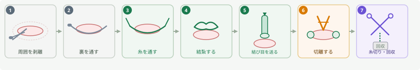
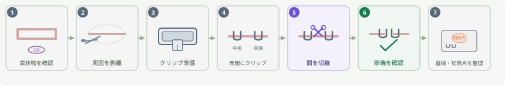
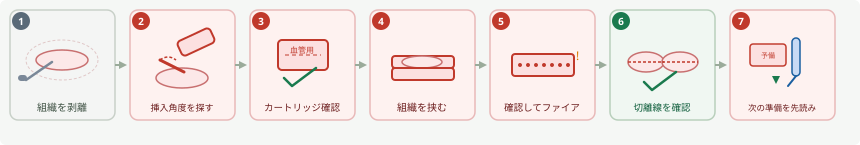
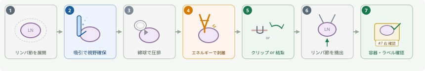
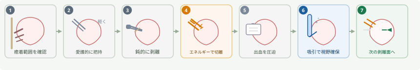
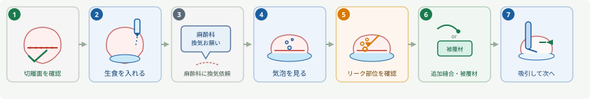
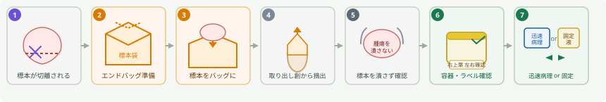
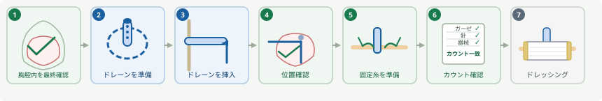
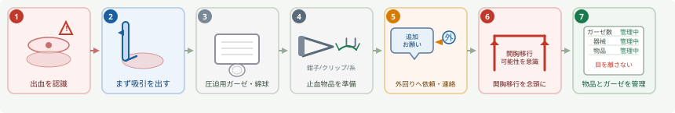
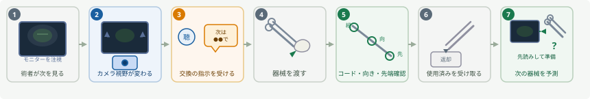

肺手術ナビ for OR Nurses
新人手術室看護師のための「一動作先読み」ガイド
肺手術では、器械出し・外回りが「今の操作」だけでなく「次の一手」を予測できると、手術の流れが大きくスムーズになる。このページでは、新人手術室看護師向けに、肺手術の場面ごとに必要な器具、目を離さない場面、術者が「こうしてくれたら助かる」と感じるポイントを整理する。
1. まず最初に見る：肺手術で新人が意識する3つのこと
カメラ映像と術者の手元を同時に意識する習慣をつける。
「言われてから探す」ではなく「来る前に準備する」ことが流れを止めない。
術者の動きと言葉の変化をセンサーにする。
2. 一動作先読みリスト：こうしてくれると助かる
| 今していること | 次に起こりやすいこと | 器械出し 準備 | 外回り 準備・確認 | こうしてくれると助かる |
|---|---|---|---|---|
| 糸で結紮している | 結紮後に糸を切る | ハサミをすぐ出せる位置に置く | 追加の糸が必要か見る | 結び終わる前からハサミを意識する |
| 針糸で縫合している | 結紮、糸切り、針回収 | 持針器、鑷子、ハサミ | 針カウントを意識 | 針が戻ったらすぐ確認し、糸切りまで流れを止めない |
| クリップをかけている | 追加クリップ、切離 | クリップ鉗子、剪刀、エネルギー | クリップ残数確認 | 1個で終わると思わず、追加がすぐ出せるようにする |
| 吸引が増えている | 出血、視野不良 | 吸引、ガーゼ、綿球 | ガーゼ追加、開胸器械確認 | 吸引だけでなく圧迫用ガーゼを考える |
| ガーゼで圧迫している | 出血点確認、追加処置 | 追加ガーゼ、血管鉗子、クリップ | 輸血準備、麻酔科の動き確認 | 圧迫中は次の指示が出るまで目を離さない |
| ステープラーを通している | 切離、追加カートリッジ | 指定カートリッジ、予備 | カートリッジ在庫確認 | 1発で終わらないことが多いので予備を意識 |
| ステープラーの角度を探している | 別サイズ・別角度が必要 | 別のステープラー、カートリッジ | 追加ポートや開胸移行の可能性 | 「入らない時間」は次の選択肢を準備する時間 |
| 肺を膨らませる指示が出た | エアリーク確認 | 生食、吸引 | 麻酔科との連携、ドレーン準備 | 「水入れて」の前に生食を意識できるとよい |
| 検体を取り出した | 標本袋、病理提出 | 標本袋、把持鉗子 | 検体容器、ラベル、迅速確認 | 検体名・左右・部位をその場で確認する |
| ドレーンを入れている | 固定、接続、閉創 | 縫合糸、持針器、剪刀 | ドレーンバッグ、陰圧設定 | ドレーンが出たら閉胸が近いと考える |
3. 場面別：目を離さないでほしいところ
胸腔内に入った直後は、癒着・胸水・播種・腫瘍位置・肺の虚脱具合を確認する場面である。予定通り進むか、追加ポートや術式変更が必要かを判断することがある。
- 吸引
- カメラ拭き
- 追加ポート
- 胸水細胞診容器
- 標本袋
出血や肺損傷が起こりやすい場面。再手術・炎症後・強い胸膜癒着では時間がかかる。カメラが汚れやすく、視野確保のための吸引とガーゼが頻繁に必要になる。
- エネルギーデバイス
- 吸引
- 小ガーゼ・大ガーゼ
- クリップ
- 開胸器械（場所を確認）
- 吸引が増えたらガーゼも考える
- 「癒着強い」と聞こえたら開胸器械の場所を確認
- カメラが汚れやすいので拭く準備をしておく
- ガーゼを入れた数を曖昧にしない
肺手術で最も緊張感が高い場面の一つ。血管周囲の剥離・リンパ節との癒着・ステープラー挿入時は出血に注意する。術者が無言になる、鉗子の動きが細かくなる、吸引が増えるなどのサインを見逃さない。
術者が無言になる ／ 鉗子の動きが細かくなる ／ 吸引が増える ／ ステープラーを何度も入れ直す ／ 「血管近い」「ちょっと待って」「圧迫」と言う
- 吸引
- 小ガーゼ
- 血管鉗子
- クリップ
- 血管用ステープラー
- 予備カートリッジ
- 開胸器械
- 出血してから探すのではなく、血管周囲に入った時点で吸引とガーゼを意識する
- ステープラーは1発で終わらないことがあるため、次のカートリッジを考える
- 開胸移行の可能性を外回りが先に考える
肺実質・血管・気管支の切離で使用する。部位によってカートリッジが異なるため、術者の指示を確認する。1発で終わらないことが多い。
- ステープラー本体
- 指定カートリッジ
- 予備カートリッジ
- 吸引
- 把持鉗子
- 標本袋
- 「ステープラー」と言われてから探さない
- 使ったカートリッジ数を意識する
- 次の1発が必要そうなら予備を手元に置く
- ステープラーが入らない時は別サイズ・別角度・追加ポートの可能性を考える
- 切離後は標本袋やエアリーク確認に進むことを予測する
気管支切離後は断端確認やエアリーク確認を行うことが多い。「肺を膨らませて」「水入れて」「リーク見ます」「もう一回換気して」などの言葉が合図になる。
- ステープラー
- 生食
- 吸引
- ドレーン
- 縫合糸
- シーラント（施設により）
- 「水入れて」と言われる前に生食を意識する
- 吸引をすぐ使えるようにする
- リークがあれば追加縫合やシーラントに進む可能性を考える
リンパ節郭清では小さな検体が複数出る。出血・神経周囲の操作・検体ラベル間違いに注意する。「右か左か」「何番リンパ節か」「迅速か永久か」を曖昧にしない。
- エネルギーデバイス
- 吸引
- クリップ
- 小ガーゼ
- 検体容器（複数）
- ラベル（部位名・左右）
- 検体が小さいので紛失しない
- 部位名をその場で確認する
- 迅速か永久か確認する
- 右か左か・何番リンパ節かを曖昧にしない
- 次のリンパ節に移る前に検体処理を完了する
閉胸前は、出血確認・エアリーク確認・カウント・ドレーン留置・肺再膨張を確認する重要な場面。疲れが出やすい時間だが、確認が最も必要な場面でもある。
- 生食
- 吸引
- ドレーン
- 固定糸
- 縫合糸
- ドレッシング
- ドレーンバッグ
- ドレーンが出たら閉胸が近いと考える
- カウントを後回しにしない
- ドレーン接続と陰圧設定を確認する
- 検体提出が残っていないか確認する
4. 器械出し向け：基本動作の深掘り 器械出し
糸を切った後は、切った糸端や針付き糸の回収を意識する。針付き糸の場合は針カウントに直結する。
クリップの残数とサイズを意識する。
- ただの液体吸引
- 出血で視野を確保している
- エアリーク確認で生食を吸っている
- 拭くため
- 圧迫止血のため
- 視野展開のため
- 臓器保護のため
5. 外回り向け：こういう時に準備してほしい 外回り
| 状況 | 外回りが準備するもの | 理由 |
|---|---|---|
| 癒着が強い | 開胸器械、追加ガーゼ、追加吸引 | 開胸移行や出血対応の可能性 |
| 血管周囲を剥離している | 輸血準備確認、開胸セット確認 | 急な出血に備える |
| ステープラー使用が続く | カートリッジ在庫確認 | 途中で不足すると流れが止まる |
| リンパ節郭清が始まる | 検体容器、ラベル | 検体が複数に分かれる |
| 迅速病理が出る | 病理連絡、搬送確認 | タイミングが重要 |
| ドレーンが出る | ドレーンバッグ、陰圧設定 | 閉胸が近い |
| 術者が開胸を示唆 | 開胸器械、照明、追加人員 | 移行をスムーズにする |
6. 新人がやりがちなミスと対策
| やりがちなこと | なぜ困るか | どうするとよいか |
|---|---|---|
| 言われてから探す | 流れが止まる | 今の操作から次を予測する |
| ステープラーを1回で終わると思う | 追加が必要なことが多い | 予備カートリッジを意識 |
| 検体ラベルを後回しにする | 部位間違いの原因 | 出た瞬間に確認 |
| 吸引だけ見てガーゼを忘れる | 出血時に圧迫できない | 吸引が増えたらガーゼも考える |
| 閉胸前に気が抜ける | カウント・ドレーン・検体確認が残る | 閉胸前こそ確認する |
| 画面を見ていない | 何が起きているか分からない | 手元だけでなくモニターを見る |
| 医師の言葉だけ待つ | 先読みできない | 操作と雰囲気を見る |
7. 術者目線：こうしてくれると助かる
- 結紮している時に、ハサミが自然に出てくる。
- 血管周囲に入った時点で、吸引とガーゼを意識している。
- ステープラーを使った後、次のカートリッジや標本袋を考えている。
- 「水入れて」の前に、生食と吸引を準備している。
- 検体が出た時に、部位名と左右をその場で確認してくれる。
- 出血時に、器械出しは手元を崩さず、外回りは追加物品と人を呼ぶ準備をしている。
- 閉胸前に、カウント・検体・ドレーン・陰圧設定を一緒に確認してくれる。
8. 5分チェックリスト
- 術式を確認した
- 右左を確認した
- VATS・RATS・開胸を確認した
- 病理迅速の有無を確認した
- ステープラーとカートリッジを確認した
- ドレーン予定を確認した
- 開胸器械の場所を確認した
- 癒着剥離中は吸引とガーゼを意識する
- 血管周囲では目を離さない
- 結紮後はハサミ
- 縫合後は糸切りと針回収
- ステープラー後は追加カートリッジを意識する
- リンパ節は検体ラベルをその場で確認する
- 閉胸前はカウント・ドレーン・検体を確認する
一動作で読む 呼吸器外科の流れ
施設・術者によって手順は異なる。このイラストは場面の把握を目的とした教材であり、実際の手術手順書の代わりにはならない。









